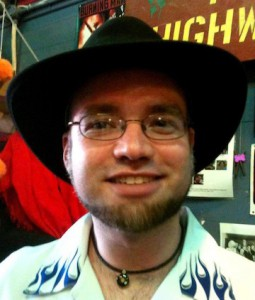
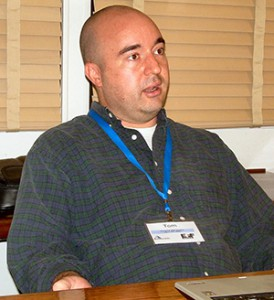
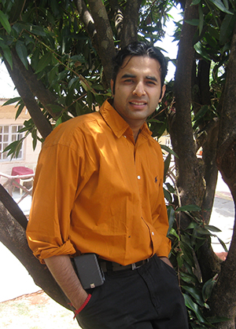

Tapan Bhargave | Benjamin Bradley | Tom Brown | Maggie Duval
Darrell Malone, Jr. | Peter Perez | Brandon Wiley
Individual Contributors
Benjamin Bradley


Tom Brown


Maggie Duval
Maggie Duval, CEO of Learning Innovations in Future Education (LIFE) and the Future Entertainment and Events Lab (FEEL) (divisions of The Futures Lab, Inc.) is a multifaceted expert in creating and producing unique events, workshops, and conferences which are immersive, engaging, entertaining, educational, inspiring, and iconoclastic – bringing together business, tech and ‘cultural creatives’ in exciting and innovative ways to dialogue and work together. She’s passionate about cross-pollinating art with science, technology, education, and entertainment. She lives and creates in Austin, TX where she is active in numerous cultural, sustainability, technology, and economic development initiatives. A natural strategist and business developer, she is an expert in intuiting synergistic alliances between all of these realms. Her work in this area includes co-creation/development and executive production of several SXSW Interactive related events called “Plutopia” (, its themes: The Science of Music, The Home of the Future, The Future of Sustainable Living, Future Living Systems, The Future of Play), as well as the FutureMusic Summit 2012. She also co-produced the wildly successful Austin Nonprofit Bar Camp (“Unconference”), The 20th Anniversary of the Raid on Steve Jackson Games, and WhuffieFest: Cory Doctorow in Austin. Rounding out her event portfolio, she’s co/developed and produced events that bring together art, fashion, revisionist history, and technology in a whimsical, engaging manner. These include two themed, costumed extravaganzas: The Spectral Panopticon: A Halloween Fundraiser for the Round Top Festival Institute, and the recent Showdown at Unobtainium 2012: Tesla vs. Edison. Additionally, she serves as Creative Director and consultant to the Austin Mini Maker Faire where she is lead for the Education/Young Makers section of the event. Maggie began her technology career in 1989 at CompuCom Systems (a computer and peripheral VAR) working with Fortune 500 companies. While at CompuCom, she won a 1991 award from IBM for top branch sales. She broadened her technical knowledge with Exemplar Logic, developers of logic synthesis tools for FPGAs. In 1995 she served as both Headquarters Sales Manager and liaison to our Japanese and Pacific Rim distributors. Also that year, she began working as a freelance Web developer. In conjunction with her Web development work, she virtually collaborated from 1995-1997 with Pearce Communications of California, a “boutique” PR firm focused on Mac-related software and Internet start-ups, as tactical implementer of online promotional activities. With Pearce, she also co-managed media relations for Burning Man in 1996. A single parent and passionate proponent of innovative education, Maggie spent many years seeking out meaningful schooling for her daughter, investigating and field testing the efficacy of “whole child” approaches, including homeschooling, unschooling, and alternative schools. She’s also an educator (futurism/emerging tech, writing, history) at and adviser to the innovative SkyBridge Austin Academy, focusing on the “T” (technology) and “E” (engineering) components of their holistic STEAM /”Make Lab” educational approach. She serves a consultant for the strategic planning, business development and capital sourcing firm Invision Group, and serves on the board of The Futures Lab, Inc. and EFF-Austin, and is a former board member for Plutopia Productions, Inc.
Brandon Wiley
Brandon Wiley is a peer-to-peer pioneer who creates tools to circumvent Internet censorship. In 1999 he co-founded the Freenet project to create a censorship-resistant publishing platform. He is also known for the Curious Yellow superworm design. When working for BitTorrent, Inc. he was given the difficult task of trying to reason with the Internet service providers that were engaging in BitTorrent throttling. More recently he has been working for the Tor project on their next generation blocking-resistant protocol systems such as obfsproxy and obfs3. He is currently a PhD candidate in Information Studies at the University of Texas at Austin, where he is studying all of the most popular Deep Packet Inspection hardware and figuring out how to defeat it.
Organizational Contributor: EarthBenign

Tapan Bhargave: CEO

Benjamin Bradley: Technology Lead
Notice Benjamin is listed here on this page twice. As an individual, Benjamin is the lead organizer of Next ECon, but as EarthBenign’s technology lead, Benjamin is contributing to thought leadership on EarthBenign’s concept-level demonstration of currency deployment technology modalities at Next ECon.
Darrell Malone, Jr.: Marketing Lead
Darrell Malone is a recent addition to the Austin Startup scene that is already making big waves. He moved to Austin in 2011 with no connections, no capital and no income. After getting a job at a local retail store and securing a series of promotions, he quickly brought himself up from a minimum wage job to being one of the top performing salesman in the city. Still unsatisfied, Darrell set his sights on larger prey. He took on a small Austin startup in the fitness market that was preparing a major product launch. After securing a position there, he took charge. He generated $180,000 in recurring revenue for the company in just under 6 months while simultaneously deploying a sales tracking system that was adopted and used by the entire sales staff. This began a surge that pushed the company past the $1,000,000 per month revenue marker. In just 2 years he had also doubled his own income 3 times. During this time, Darrell also dabbled in the Austin startup market with a company of his own called Quarter Up Events. After slowly securing equipment and marketing materials over a period of a few months, he kicked off the company with a less than stellar launch. Undeterred, Darrell worked tirelessly to perfect his methods and eventually turn Quarter Up into a small profit center. With his entrepreneurial and sales skills fully sharpened and his confidence bolstered, Darrell Malone formed Endeavor Marketing Solutions to bring change by building businesses. To get in touch with Darrell, scope out the coffee shops of South and Central Austin. He’ll be hard to miss; just look for the towering man with the deep resonant voice. But, come ready to talk and come with a challenge; Darrell tends to listen more than he speaks and is always plotting his next big move.
Peter Perez: Chief Liaison Officer
Peter Perez – US Army Vet – discovered during his service that a clash between the economies of old and new was under way. Taking upon himself the need to be more prepared, Peter sharpened his knowledge of future economies and the choice we would face when the event horizon was upon us. Peter situates himself outside of the status quo and anticipates the day when the current economies are finally disrupted enough to shake away the old norms of conducting business. Instead of just the profit-only mechanism with zero regard for health and well-being of planet and people, we now have before us the chance to embrace new transactional methods that enhance our relationship to community, habitat, and financial security. Peter trusts in his observations. His work with volunteer organizations such as The Zeitgeist Movement, The Venus Project, and Artivist Film Festival helped secure his place among the many shakers and movers of the movement towards improving stewardship on planet earth.
I just now discovered ‘Next Econ’ on the ATEN website. Based on that and what I’ve seen on your website, I’m very impressed and excited about what y’all are doing and the upcoming conference here in Austin.
A few years back I was smitten with an idea about how to link economy with ecology such that they become mutually complementary phenomenon – sounds crazy I know, but I’d like the opportunity to pitch the idea to y’all sometime and get your feedback on it.
You can check the home and blog page of my website (feralppl.net) to get the gist of it. I must apologized for the website – my lack of computer skills are my excuse for its incomplete state. Also, here’s a link to the draft of an article that also explains it somewhat.
https://docs.google.com/document/d/1K8Vef9Rt4LFQT-FtKM16GnRroZZRBZP5RN29VsoGvQc/edit
Meanwhile, I’m looking forward to the upcoming conference and to meeting all of you.